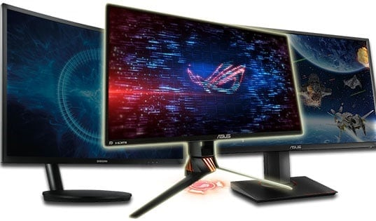

As Fast As Possible

You’ve probably heard how a 144Hz gaming monitor is a must-have for competitive gaming, that once you go 144Hz, you can never go back, and similar praises – but just how true is all that?
In this article, we’ll clarify what a 144Hz refresh rate exactly means and whether or not it’s worth your money.
A 144Hz or a higher refresh rate monitor greatly improves your gaming experience in competitive games as long as your CPU/GPU and the display’s response time speed can keep up with the monitor’s refresh rate.
Besides monitor’s refresh rate, you should also look out for its response time speed if you want the best performance in fast-paced games.
While a higher refresh rate does offer a smoother motion clarity, if pixels can’t change from one color to another (response time) in time with those refresh rates, you get trailing, ghosting, and motion blur.That’s why most gamers opt for TN panel displays which have a 1ms response time speed and avoid VA panels which have the slowest response time. IPS panels are somewhere in between, they offer a good balance between image quality and performance.
Higher frame rate/refresh rate also reduces input lag and makes screen tearing less noticeable which also greatly contributes to the gaming responsiveness and immersion.
While you may not feel or notice any issues while gaming on your 60Hz monitor right now, if you were to get a 144Hz display and game on it for a while, and then switch back to 60Hz, you would definitely notice that something is missing.
Well, keeping all of the above in mind, it is a highly subjective question. Essentially, it comes down to which you prefer: visual quality or performance? Of course, if you’re really hell-bent on both, you can spend over $600 on an IPS 144Hz monitor, but not everyone is going to invest that much.
As far as we’re concerned, we’d leave 144Hz monitors to those who mainly play multiplayer games and want every possible advantage that they can get. Meanwhile, a 60Hz monitor equipped with an IPS or a VA panel will offer better visuals at a similar price, not to mention potential HDR support.
But, as always, preferences differ and you should pick whichever type of monitor you feel fits your needs and tastes better. If you’re shopping for one right now, here’s a list of the best gaming monitors currently available, performance and visuals-oriented ones alike!
Monitor guide ...